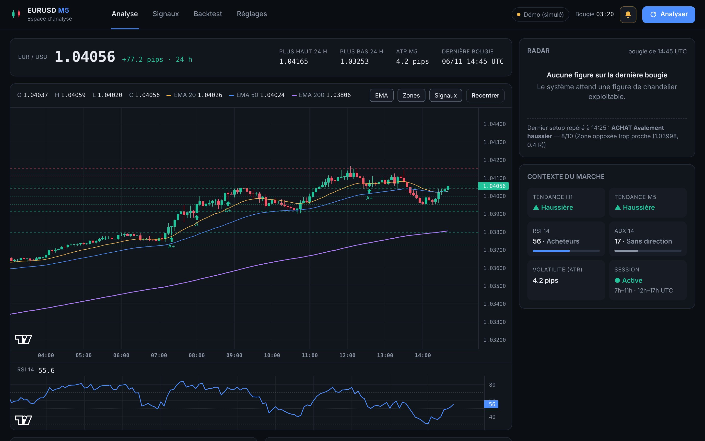
Ce guide explique tout ce qu'il faut savoir pour utiliser le système au quotidien. Lis au moins les chapitres 1 à 4 et le chapitre 11 avant de trader avec.
EURUSD M5 Analyzer surveille l'EURUSD en unité de temps 5 minutes. À chaque clôture de bougie, il cherche une figure de chandelier japonais, vérifie si le contexte la confirme, lui attribue une note sur 10 et, si la note est suffisante, t'avertit avec un plan de trade complet.
L'installation se fait une seule fois. La configuration recommandée est un PC Windows avec MetaTrader 5, pour avoir les prix exacts de ton courtier en temps réel.
| Élément | Détail |
|---|---|
| Windows 10 ou 11 | Nécessaire pour la connexion MetaTrader 5. (Sans MT5, l'outil marche aussi sur Linux, macOS et Termux avec Yahoo Finance.) |
| Python 3.10 ou plus | À télécharger sur python.org. Pendant l'installation, coche impérativement « Add Python to PATH ». |
| MetaTrader 5 | Le terminal de ton courtier, installé et connecté à un compte (démo ou réel). |
| Git (conseillé) | Pour télécharger le dépôt et le mettre à jour facilement (git-scm.com). Sinon, télécharge le ZIP depuis GitHub. |
| Navigateur | Chrome, Edge ou Firefox récent. |
cmd) et tape :
cd %USERPROFILE%\Documents git clone https://github.com/ck526438-lgtm/eurusd-m5-analyzer.git cd eurusd-m5-analyzerLe dépôt est privé : Git te demandera de te connecter à ton compte GitHub la première fois.
start.bat. La première fois, il crée un environnement Python dédié et installe toutes les dépendances (1 à 3 minutes). Les fois suivantes, il démarre directement.http://localhost:8000. Le terminal reste ouvert : c'est lui qui fait tourner le système et qui affiche les notifications. Ne le ferme pas tant que tu veux recevoir des signaux.pip install -r requirements.txt
pip install MetaTrader5 plyer # Windows uniquement (optionnels)
python main.py
Sur Linux, macOS ou Termux (Android), MetaTrader 5 n'est pas disponible : l'outil passe automatiquement sur Yahoo Finance (gratuit, avec un léger retard possible).
Pour découvrir l'interface sans MetaTrader 5 :
python main.py --demo
Deux réglages doivent correspondre à ton courtier : le nom exact du symbole et le décalage horaire de son serveur. Ils se changent dans l'onglet Réglages → Données.
Chaque courtier nomme l'EURUSD à sa façon : EURUSD, EURUSDm, EURUSD.pro, EURUSD#… Ouvre la fenêtre Observation du marché dans MT5 (Ctrl+M) et recopie le nom exactement, majuscules et suffixe compris, dans le champ Symbole chez le courtier.
MetaTrader 5 donne l'heure des bougies à l'heure de son serveur, qui est souvent UTC+2 en hiver et UTC+3 en été. Le système travaille en UTC (qui est aussi l'heure d'Abidjan) pour les sessions et la tendance H1. Pour trouver ton décalage :
| Source | Quand l'utiliser |
|---|---|
| Auto | Par défaut : essaie MetaTrader 5, puis Yahoo Finance si MT5 n'est pas disponible. |
| MetaTrader 5 | Recommandé. Prix exacts de ton courtier, en temps réel, historique long pour le backtest. |
| Yahoo Finance | Sans MT5 (téléphone, Mac, Linux). Gratuit, 60 jours d'historique maximum, petit retard possible. |
| Fichier CSV | Pour backtester ton propre historique. Colonnes time, open, high, low, close en heure UTC. |
| Démo | Pour découvrir l'interface. Prix simulés, jamais pour trader. |
Le système fonctionne tant que la fenêtre du terminal est ouverte. Pour l'arrêter, clique dans cette fenêtre et appuie sur Ctrl + C, ou ferme-la.
| Commande | Ce qu'elle fait |
|---|---|
python main.py | Lance l'espace d'analyse : ouvre le navigateur, analyse à chaque bougie, notifie dans le terminal et le navigateur. C'est le mode normal (c'est aussi ce que fait start.bat). |
python main.py watch | Mode terminal seul : pas d'interface web, une ligne par bougie et un bandeau à chaque signal. Léger, idéal sur un petit PC ou sur Termux. |
python main.py scan | Analyse la dernière bougie une seule fois, affiche le résultat et quitte. |
python main.py backtest | Lance un backtest dans le terminal (même calcul que l'onglet Backtest). |
| Option | Effet | Exemple |
|---|---|---|
--demo | Utilise le marché simulé | python main.py --demo |
--source | Force une source : mt5, yfinance, csv, demo | --source yfinance |
--csv | Utilise un fichier d'historique | --csv historique.csv |
--bars | Nombre de bougies chargées | backtest --bars 50000 |
--port | Change le port de l'interface (8000 par défaut) | --port 8080 |
--no-browser | N'ouvre pas le navigateur automatiquement | |
--no-bell | Coupe le bip du terminal | |
-v | Affiche les messages techniques (diagnostic) |
Avec start.bat, les options s'ajoutent après le nom : par exemple, crée un raccourci vers start.bat watch pour lancer directement le mode terminal.
C'est l'écran principal, celui que tu gardes ouvert pendant les sessions. Il se met à jour tout seul à chaque bougie.
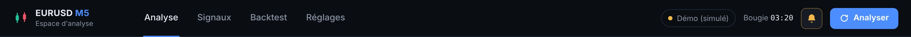
| Onglets | Analyse, Signaux (le chiffre bleu indique les signaux encore en cours), Backtest, Réglages. |
| Badge de source | Point vert pulsant = données réelles en direct. Orange = démo. Rouge = problème de données (voir le bandeau d'erreur). |
| Bougie mm:ss | Temps restant avant la clôture de la bougie M5 en cours, donc avant la prochaine analyse. |
| Cloche | Active ou coupe d'un clic le son et la notification du navigateur (jaune = activé). |
| Analyser | Relance l'analyse immédiatement (utile après avoir reconnecté MT5). |
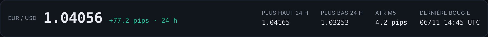
L'ATR M5 mesure la taille moyenne d'une bougie en pips. Sous 3 pips, le marché est très calme et les signaux sont rares ; au-delà de 10 pips, il est agité (souvent pendant une annonce économique).
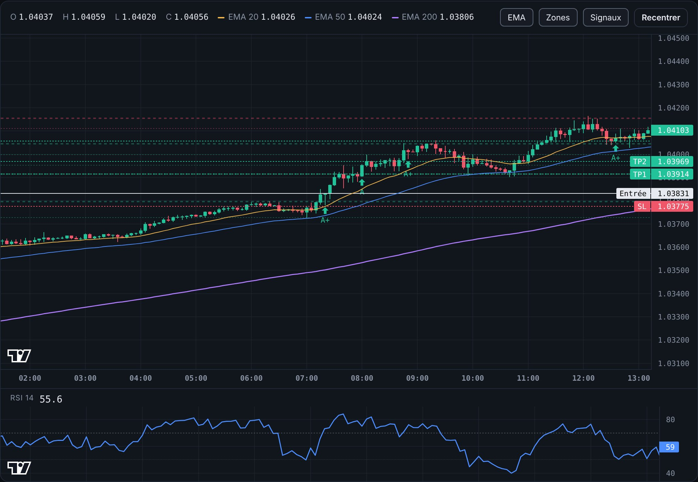
Le radar est le cœur de l'outil : il montre l'analyse de la dernière bougie clôturée, en détail.
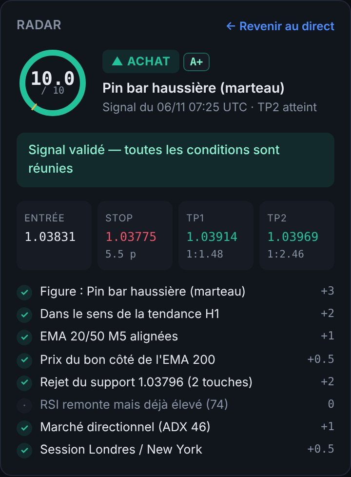
Quand tu cliques sur un ancien signal (flèche, liste ou journal), le radar l'affiche avec son résultat. « ← Revenir au direct » revient à l'analyse en cours.
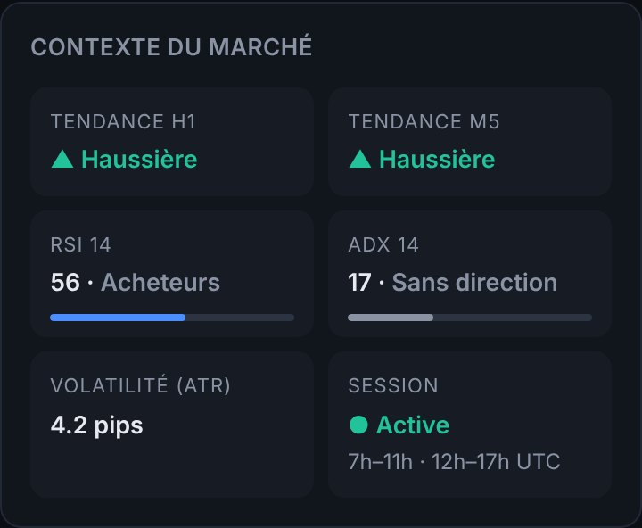
| Tendance H1 | Direction de fond sur l'heure (EMA 20/50 H1). Les meilleurs signaux vont dans son sens. |
| Tendance M5 | Alignement des EMA 20/50 sur le M5. |
| RSI 14 | Force des acheteurs/vendeurs. >70 suracheté, <30 survendu. |
| ADX 14 | Force de la tendance. <18 sans direction : les signaux y perdent des points. |
| Volatilité | ATR en pips (voir la cotation). |
| Session | Active pendant les heures configurées (7 h–11 h et 12 h–17 h UTC par défaut). |
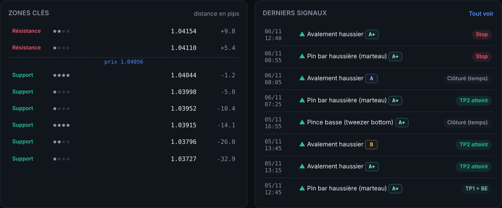
Les zones clés sont les niveaux où le prix a déjà fait demi-tour (points pivots regroupés). Les points indiquent combien de fois la zone a été touchée : à partir de 2, c'est une zone forte. La colonne de droite donne la distance au prix en pips (+ au-dessus, − en dessous). Dans Derniers signaux, clique sur une ligne pour revoir le signal sur le graphique.
Un signal = une figure de chandelier + un contexte favorable + un plan de risque acceptable. Voici exactement comment chaque élément est évalué.
| Figure | Sens | Ce que le système cherche |
|---|---|---|
| Avalement | ▲ ▼ | Une bougie dont le corps englobe entièrement celui de la bougie précédente, de couleur opposée, et au moins 10 % plus grand. Forte si le corps dépasse 1 ATR. |
| Pin bar (marteau / étoile filante) | ▲ ▼ | Une longue mèche (au moins 2 fois le corps et 60 % de la bougie) qui montre un rejet du prix, et une mèche opposée courte (≤ 25 %). |
| Étoile du matin / du soir | ▲ ▼ | Trois bougies : une grande bougie dans le sens de la baisse (ou hausse), une petite bougie d'hésitation, puis une bougie inverse qui clôture au-delà du milieu de la première. |
| Trois soldats blancs / trois corbeaux noirs | ▲ ▼ | Trois bougies consécutives de même couleur, chacune avec un corps d'au moins 0,5 ATR et une clôture plus loin que la précédente. |
| Pince basse / haute (tweezer) | ▲ ▼ | Deux bougies de couleur opposée avec des plus bas (ou plus hauts) quasi identiques : le niveau a été défendu deux fois. |
| Cassure d'inside bar | ▲ ▼ | Une bougie « mère » (≥ 0,8 ATR), une bougie entièrement contenue dans la mère, puis une clôture au-delà de la mère. |
Les petites bougies (amplitude inférieure à 0,6 ATR) sont ignorées : une figure ne compte que si elle a du poids. Si plusieurs figures concordent sur la même bougie, la figure gagne 1 point de force. Si une figure d'achat et une figure de vente apparaissent ensemble, le système s'abstient.
| Critère | Points | Explication |
|---|---|---|
| Force de la figure | 1 à 3 | Selon la taille de la figure ; +1 si plusieurs figures concordent (maximum 3). |
| Tendance H1 | +2 / 0 / −2 | +2 dans le sens de la tendance de fond, −2 à contre-tendance, 0 si neutre. |
| EMA 20/50 M5 | +1 | Prix et EMA 20 du bon côté de l'EMA 50. |
| EMA 200 | +0,5 | Prix au-dessus (achat) ou en dessous (vente) de l'EMA 200. |
| Zone clé | +1 / +2 | La mèche de la figure rejette un support (achat) ou une résistance (vente) : +2 si la zone est forte (≥ 2 touches), +1 sinon. À défaut, +1 si le prix rebondit sur la zone EMA 20/50. |
| RSI | +1 / 0 / −1 | +1 si le RSI va dans le sens du trade sans être en excès ; −1 si déjà suracheté (≥ 75, achat) ou survendu (≤ 25, vente). |
| ADX | +1 / −1 | +1 si l'ADX ≥ 18 (marché directionnel), −1 sinon. |
| Session | +0,5 | Bougie clôturée pendant une session configurée. |
| Qualité | Score | Interprétation |
|---|---|---|
| A+ | ≥ 8 | Configuration très complète : figure, tendance et zone sont alignées. |
| A | ≥ 7 | Bonne configuration, un élément manque. |
| B | ≥ 6 | Configuration acceptable, plus fragile. À privilégier seulement si le backtest le justifie. |
| C | < 6 | Visible dans le radar, jamais notifiée avec le réglage par défaut. |
Quand le radar affiche « Pas de signal », la raison est l'une des suivantes :
| Message | Signification | Faut-il s'inquiéter ? |
|---|---|---|
| Score insuffisant (x < 6) | La figure existe mais le contexte ne la confirme pas assez. | Non, c'est le filtre normal. Regarde les critères en gris/rouge. |
| Zone opposée trop proche | Une résistance (achat) ou un support (vente) bloque le prix à moins de 1,2 R : le gain potentiel est trop petit. | Non, c'est une protection. |
| Stop trop large | La figure est si grande que le stop dépasse 18 pips. | Fréquent pendant les annonces économiques. |
| Figures achat et vente contradictoires | La bougie forme à la fois une figure haussière et baissière. | Non, marché indécis. |
| Hors des heures de session | La bougie s'est fermée en dehors des sessions configurées. | Non. Désactivable dans Réglages. |
| Un signal a déjà été donné il y a moins de 30 min | Un signal dans le même sens vient d'être émis : on évite les doublons. | Non. Le délai se règle dans Réglages. |
Le journal conserve tous les signaux et suit leur résultat tout seul, bougie après bougie, selon les règles de gestion de l'outil (50 % à TP1, stop au point d'entrée, reste à TP2).
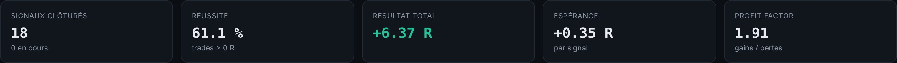
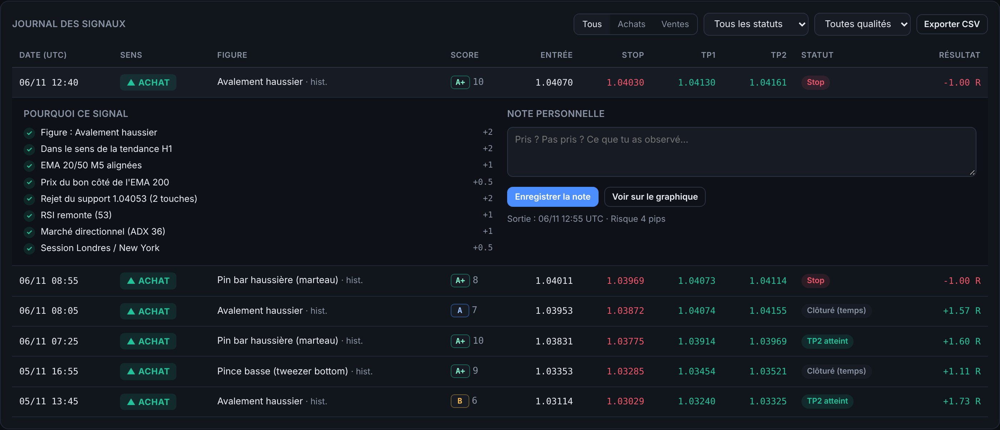
| Statut | Signification | Résultat |
|---|---|---|
| En cours | Ni le stop ni TP2 n'ont été atteints. Le résultat affiché (en gris) est le résultat latent. | variable |
| TP2 atteint | TP1 puis TP2 touchés : trade complet gagnant. | ≈ +2 R |
| TP1 + BE | TP1 touché (50 % encaissé), puis retour au point d'entrée sur le reste. | ≈ +0,7 R |
| Stop | Stop touché avant TP1. | −1 R |
| Clôturé (temps) | Ni stop ni TP2 au bout de 4 heures : clôture au prix du moment. | variable |
Les résultats intègrent un spread de 0,8 pip. Si le stop et un objectif sont touchés dans la même bougie, le système compte le stop (hypothèse prudente). La mention « hist. » signale un signal retrouvé dans l'historique au démarrage, quand l'outil était éteint.
Un nouveau signal est annoncé à trois endroits possibles. Les trois peuvent être actifs en même temps.
La fenêtre qui fait tourner l'outil affiche une ligne de suivi à chaque bougie, puis un bandeau coloré avec un bip à chaque signal :
14:45 EURUSD 1.04056 H1 ▲ RSI 56 ADX 17 ATR 4.2p │ aucune figure 12:35 EURUSD 1.04071 H1 ▲ RSI 53 ADX 36 ATR 4.6p │ ACHAT Avalement haussier 10.0/10 — SIGNAL ▲ ACHAT EURUSD · qualité A+ · score 10.0/10 Avalement haussier — bougie clôturée 06/11 12:40 UTC Entrée 1.04070 Stop 1.04030 (4.0 pips) TP1 1.04130 (1:1.5) TP2 1.04161 (1:2.28) ✓ Figure : Avalement haussier +2 ✓ Dans le sens de la tendance H1 +2 ✓ EMA 20/50 M5 alignées +1 ✓ Prix du bon côté de l'EMA 200 +0.5 ✓ Rejet du support 1.04053 (2 touches) +2 ✓ RSI remonte (53) +1 ✓ Marché directionnel (ADX 36) +1 ✓ Session Londres / New York +0.5
Chaque ligne de suivi indique l'heure, le prix, la tendance H1, le RSI, l'ADX, l'ATR et l'état du radar (figure et raison du refus éventuel). Pour couper le bip : option --no-bell.
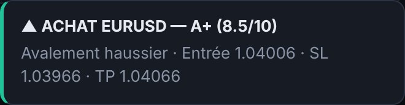
À chaque signal, un message apparaît en bas à droite de l'interface. Tu peux aussi activer :
Clique sur la cloche en haut à droite : le navigateur te demande l'autorisation la première fois, clique sur Autoriser. Le réglage fin (son seul, notification seule) se fait dans Réglages → Notifications.
Pour être prévenu même navigateur fermé, installe le module plyer (déjà fait par start.bat), puis active Notification Windows dans Réglages → Notifications.
Le backtest rejoue la stratégie sur l'historique, bougie par bougie, comme si l'outil avait tourné tout ce temps. C'est la seule façon de savoir si la stratégie fonctionne chez ton courtier avant de risquer de l'argent.
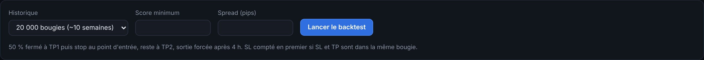
Règles de simulation : un seul trade à la fois ; 50 % fermé à TP1 puis stop au point d'entrée ; reste à TP2 ; sortie forcée après 4 h ; spread payé à l'entrée ; stop compté en premier si stop et objectif sont dans la même bougie.
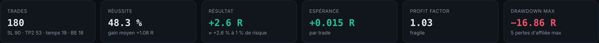
| Indicateur | Définition | Repère |
|---|---|---|
| Trades | Nombre de trades simulés, avec la répartition des sorties. | ≥ 100 pour que les chiffres aient du sens. |
| Réussite | Part des trades terminés en gain. | Avec ces objectifs, 40–50 % peut suffire. |
| Résultat | Somme des résultats en R. À 1 % de risque par trade, +20 R ≈ +20 % du capital. | Positif. |
| Espérance | Gain moyen par trade, en R. L'indicateur le plus important. | > +0,10 R : intéressant. |
| Profit factor | Total des gains ÷ total des pertes. | > 1,3 solide ; 1–1,3 fragile ; < 1 perdant. |
| Drawdown max | Plus forte baisse depuis un sommet de la courbe de capital. | Doit être supportable pour toi. |
| Pertes d'affilée | Plus longue série de trades perdants. | Prépare-toi à la vivre en réel. |
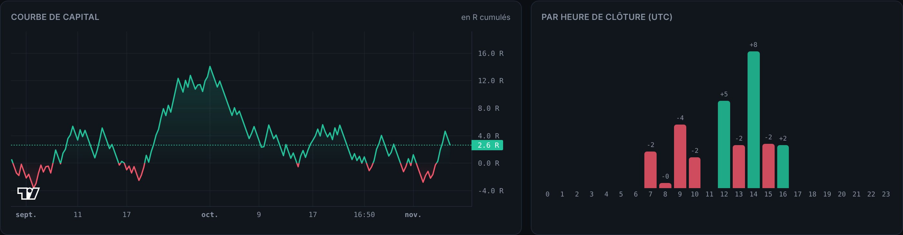
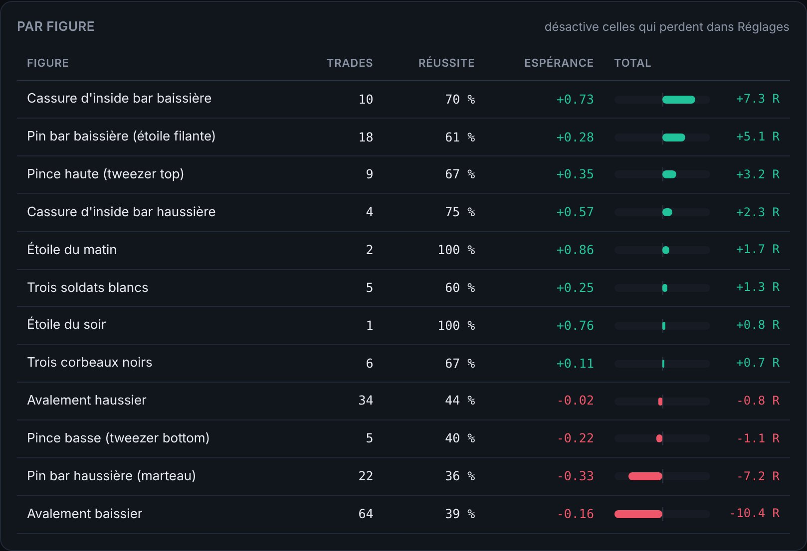
Tous les paramètres se modifient dans l'onglet Réglages. Clique sur Enregistrer : ils sont sauvegardés dans config.yaml et l'analyse est relancée aussitôt. Annuler recharge les valeurs enregistrées.
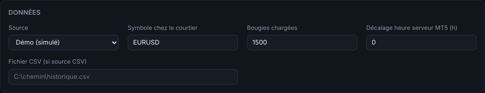
| Paramètre | Défaut | Effet |
|---|---|---|
| Source | Auto | D'où viennent les prix (voir chapitre 3). |
| Symbole chez le courtier | EURUSD | Nom exact dans MT5. |
| Bougies chargées | 1 500 | Historique utilisé pour l'analyse en direct (≈ 5 jours). Suffisant ; inutile d'augmenter. |
| Décalage heure serveur MT5 | 0 | Différence entre l'heure du serveur et UTC (souvent 2 ou 3). |
| Fichier CSV | — | Chemin du fichier si la source est CSV. |
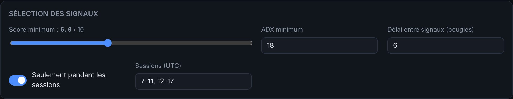
| Paramètre | Défaut | Effet |
|---|---|---|
| Score minimum | 6 | Note minimale pour qu'un setup devienne un signal. Plus haut = moins de signaux, en principe de meilleure qualité. |
| ADX minimum | 18 | Seuil sous lequel le marché est considéré « sans direction » (−1 point). |
| Délai entre signaux | 6 bougies | Pas deux signaux du même sens en moins de 30 minutes. |
| Seulement pendant les sessions | Oui | Ignore les setups en dehors des heures de session. |
| Sessions (UTC) | 7-11, 12-17 | Heures de début et de fin, séparées par des virgules. Ex. : 7-11, 12-16. |
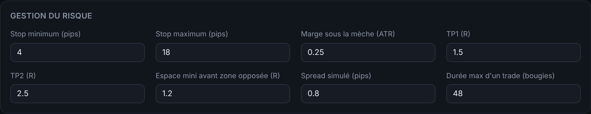
| Paramètre | Défaut | Effet |
|---|---|---|
| Stop minimum | 4 pips | Un stop plus serré est élargi à cette valeur (évite d'être sorti par le spread et le bruit). |
| Stop maximum | 18 pips | Au-delà, le setup est refusé. |
| Marge sous la mèche | 0,25 ATR | Distance ajoutée derrière l'extrémité de la figure. |
| TP1 | 1,5 R | Premier objectif. |
| TP2 | 2,5 R | Second objectif (doit être ≥ TP1). |
| Espace mini avant zone opposée | 1,2 R | Refuse le setup si une zone bloque le prix plus tôt. |
| Spread simulé | 0,8 pip | Coût utilisé par le journal et le backtest. Mets le spread moyen de ton courtier. |
| Durée max d'un trade | 48 bougies | Sortie forcée après 4 h. |
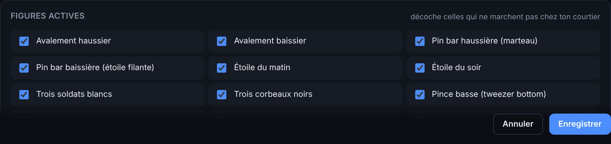
Décoche une figure pour que le système l'ignore complètement. Fais-le uniquement sur la base d'un backtest suffisamment long (voir chapitre 9). La dernière section, Notifications, règle le son, la notification du navigateur (mémorisés dans ton navigateur) et la notification Windows (enregistrée dans config.yaml).
Le système trouve les opportunités ; ta discipline fait le résultat. Voici une routine simple et cohérente avec la façon dont le système mesure ses résultats.
Risque toujours un pourcentage fixe de ton capital (1 % maximum) et adapte le nombre de lots à la taille du stop indiquée dans le signal :
Sur l'EURUSD, avec un compte en dollars, 1 pip vaut environ 10 $ pour 1 lot standard (1,00), 1 $ pour 0,10 lot et 0,10 $ pour 0,01 lot.
| Capital | Risque 1 % | Stop du signal | Calcul | Lots |
|---|---|---|---|---|
| 500 $ | 5 $ | 5 pips | 5 ÷ (5 × 10) | 0,10 |
| 1 000 $ | 10 $ | 8 pips | 10 ÷ (8 × 10) | 0,12 |
| 2 000 $ | 20 $ | 12,5 pips | 20 ÷ (12,5 × 10) | 0,16 |
Arrondis toujours vers le bas. Si ton compte est en euros ou en FCFA, la valeur du pip change : vérifie-la dans MT5 (spécification du symbole) ou avec un calculateur de position.
| Problème | Solution |
|---|---|
| « python » n'est pas reconnu | Python n'est pas dans le PATH. Réinstalle Python en cochant « Add Python to PATH », puis ferme et rouvre l'invite de commandes. |
| Le badge affiche Yahoo Finance au lieu de MetaTrader 5 | MT5 n'est pas joignable : vérifie qu'il est ouvert et connecté, que MetaTrader5 est installé (pip install MetaTrader5) et que tu utilises Python 64 bits. Puis clique sur Analyser. |
| « Aucune donnée MT5 pour EURUSD » | Le nom du symbole ne correspond pas à ton courtier. Recopie-le depuis « Observation du marché » dans Réglages → Données. |
| L'heure de la dernière bougie est décalée | Corrige le « Décalage heure serveur MT5 » (chapitre 3). |
| Bandeau rouge « Données indisponibles » | Problème de connexion à la source. Vérifie Internet et MT5. Le système réessaie automatiquement à chaque bougie. |
| La page ne s'ouvre pas | Vérifie que le terminal est toujours ouvert et sans erreur. Ouvre manuellement http://localhost:8000. |
| « Address already in use » / port occupé | L'outil tourne déjà dans une autre fenêtre, ou un autre programme utilise le port. Ferme l'autre fenêtre ou lance avec --port 8080. |
| Pas de son | Clique une fois dans la page (exigence des navigateurs), vérifie la cloche et le volume du PC. |
| Pas de notification du navigateur | Autorise les notifications pour localhost dans les paramètres du navigateur, et vérifie que le mode « Ne pas déranger » de Windows est désactivé. |
| Aucun signal depuis longtemps | C'est normal en dehors des sessions, en marché calme (ATR faible) ou sans tendance (ADX bas). Regarde le radar : il dit ce qui manque. Avec les réglages par défaut, compte en moyenne quelques signaux par jour. |
| Caractères bizarres dans le terminal | Utilise Windows Terminal (installé par défaut sur Windows 11) plutôt que l'ancienne invite de commandes. |
| Le backtest est lent | 50 000 bougies prennent environ 10 à 30 secondes. C'est normal. |
| Fichier | Contenu |
|---|---|
config.yaml | Tous tes réglages. Modifiable dans l'interface ou avec un éditeur de texte. |
data/journal.db | Le journal des signaux, avec résultats et notes (base SQLite). |
docs/ | Ce guide et les captures d'écran. |
Pour sauvegarder, copie config.yaml et le dossier data sur une clé USB ou un cloud. Le dossier data n'est jamais envoyé sur GitHub : ton journal reste privé sur ton PC. Pour repartir d'un journal vide, arrête l'outil et supprime data/journal.db.
cd %USERPROFILE%\Documents\eurusd-m5-analyzer git pull .venv\Scripts\activate pip install -r requirements.txt
Tes réglages et ton journal sont conservés. Si git pull signale un conflit sur config.yaml, sauvegarde ton fichier, lance git checkout config.yaml, refais le git pull, puis remets tes valeurs dans l'onglet Réglages.
http://localhost:8000/api/docs (pour brancher d'autres programmes).analyzer/ (figures, indicateurs, zones, score, backtest, journal, serveur, terminal) et l'interface dans web/.python -m pytest -q et tournent sur GitHub à chaque mise à jour.start.bat.